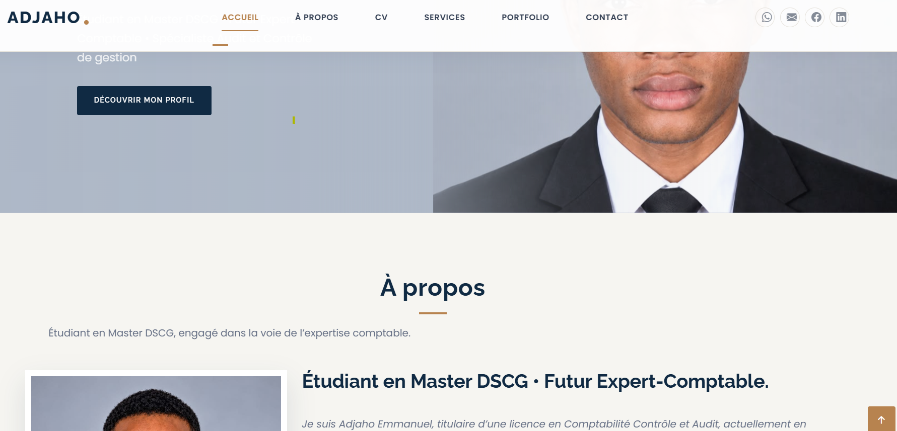
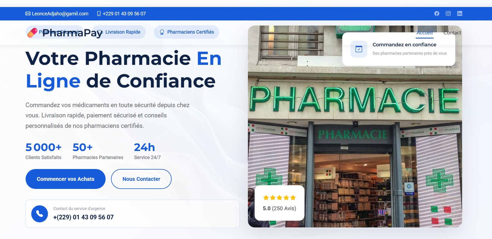
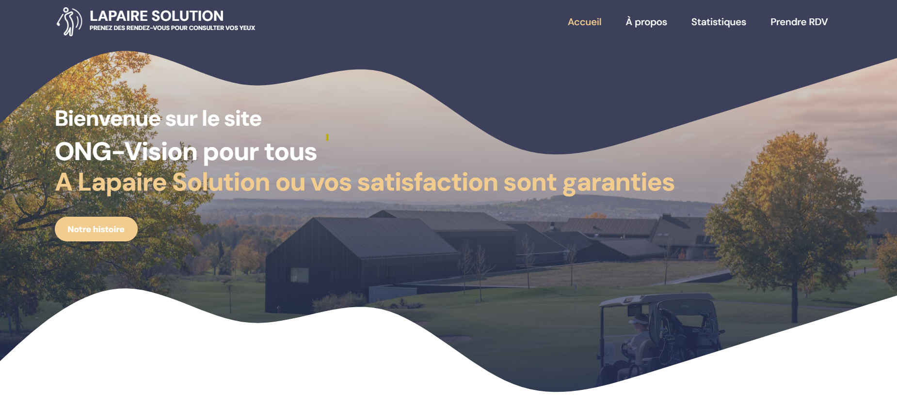

Parlez-moi de votre besoin
Présentez votre activité, vos objectifs et les personnes que vous souhaitez toucher. Précisez le type de site, les fonctionnalités souhaitées, vos délais et votre budget si vous en avez déjà un.
Portfolio développeur · Parakou, Bénin
Développeur Full Stack · Django · JavaScript
Étudiant en 3ᵉ année de licence en informatique (IUT, Université de Parakou, Bénin). Je conçois et développe des applications web complètes, de la base de données à l’interface, avec une solide formation théorique en bases de données, architecture logicielle et programmation.
Je suis capable de prendre en charge un projet de bout en bout : analyse du besoin, modélisation (MERISE, UML), développement du back-end, conception de l’interface et mise en ligne. J’ai déjà réalisé des missions en freelance et livré [4] projets complets.
Ce qui me distingue : une base théorique rigoureuse (algèbre relationnelle, SQL, architecture client-serveur) associée à une pratique régulière du développement web.
API, logique métier, authentification, ORM.
Interfaces responsives et accessibles.
Modélisation, requêtes, optimisation.
Conception et raisonnement algorithmique.


Site d’essai personnel réalisé par moi-même.

Lien disponible à la fin du développement.

Lien disponible à la fin du développement.
De votre première idée à la mise en ligne, nous avançons étape par étape. Vous savez ce qui est prévu et vous pouvez donner votre avis tout au long du projet.
Présentez votre activité, vos objectifs et les personnes que vous souhaitez toucher. Précisez le type de site, les fonctionnalités souhaitées, vos délais et votre budget si vous en avez déjà un.
Nous clarifions les pages, les contenus et les fonctionnalités. Je vous propose un périmètre, un calendrier et un devis à valider avant de commencer le développement.
Je construis votre site et vous partage les étapes importantes pour recueillir vos retours. Nous ajustons ensemble l’interface et le contenu selon le projet défini.
Avant la livraison, nous vérifions le rendu sur ordinateur et mobile. Je vous accompagne pour la prise en main et peux vous aider après la mise en ligne selon les modalités convenues.
Vous avez une idée, même encore incomplète ? Écrivez-moi : nous pouvons commencer par en discuter.
Disponible pour des missions freelance, stages et collaborations.
adjaholeonce12@gmail.com · Facebook · GitHub · LinkedIn · 0150367960